Inicio del programa y selección del repositorio
Tras iniciar el programa, Clonezilla solicita seleccionar el dispositivo que se montará como /home/partimag, que será la ubicación donde se guardarán las imágenes de clonación.
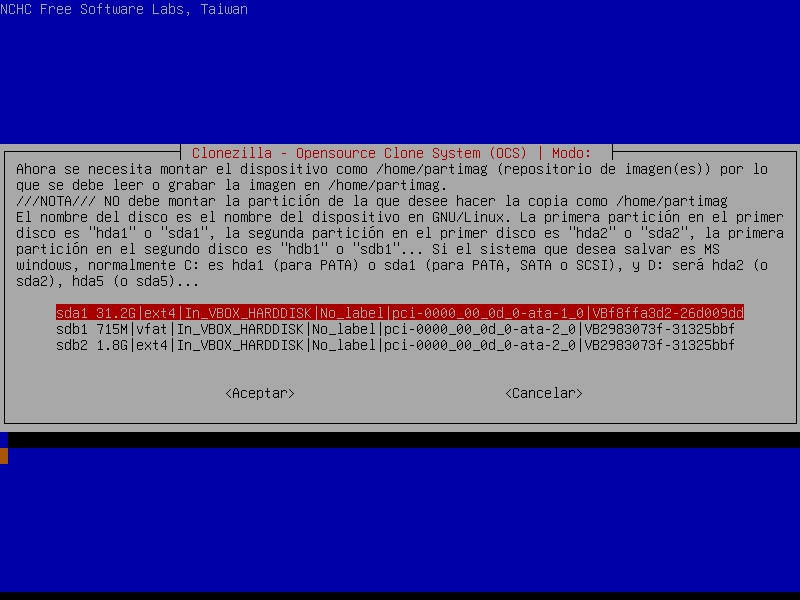
En esta sección se presentan herramientas útiles en administración de sistemas y almacenamiento. Se documenta el uso de Clonezilla, RAID 6 y Wise Memory Optimizer de forma visual, ordenada y explicativa.
A continuación, se adjuntan las capturas realizadas durante la práctica con Clonezilla. El objetivo es mostrar el proceso de selección del repositorio, creación de la imagen de clonación y validación final del clon generado.
Objetivo de la práctica
Clonezilla permite crear imágenes de particiones o discos completos para su restauración posterior. Es una herramienta muy útil para copias de seguridad, despliegue de sistemas y recuperación ante fallos.
Tras iniciar el programa, Clonezilla solicita seleccionar el dispositivo que se montará como /home/partimag, que será la ubicación donde se guardarán las imágenes de clonación.

En este paso se selecciona la partición /dev/sdb2 como repositorio de imágenes, quedando así definida la ubicación donde se almacenará el clon generado por Clonezilla.
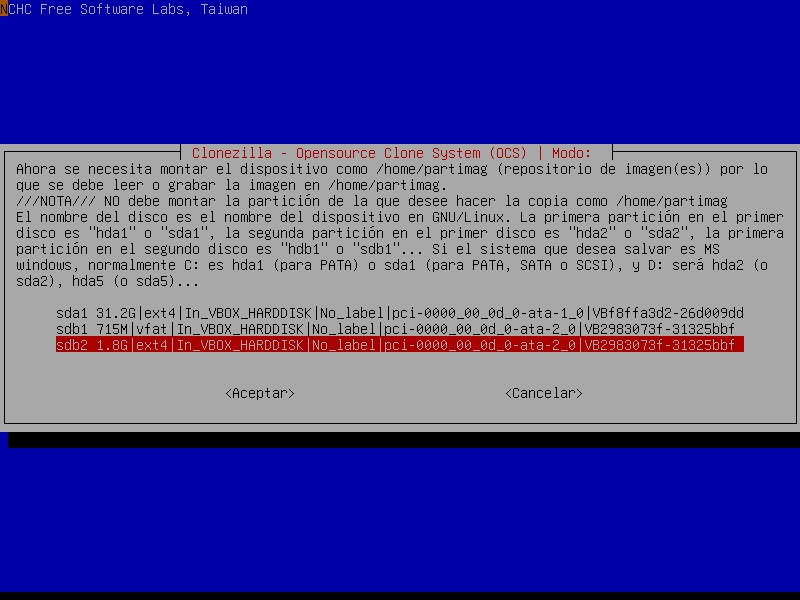
Aquí se está copiando la partición /dev/sdb2 a una imagen. El proceso finaliza al 100% sin errores, lo que confirma que la clonación se ha realizado correctamente.
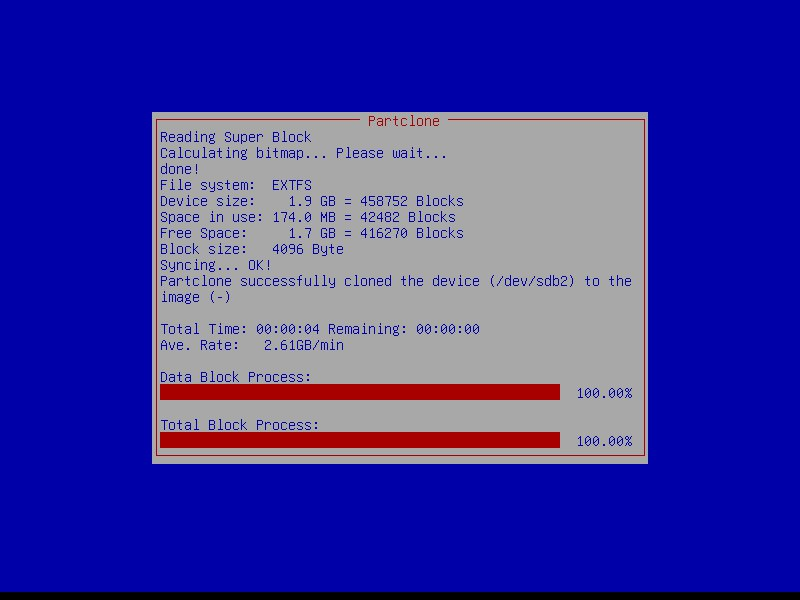
En esta imagen, Clonezilla verifica la imagen creada y muestra el resumen del proceso. Se indica que la tabla de particiones es MBR y que la imagen almacenada en /home/partimag/2025-12-15-20-img es restaurable, por lo que la clonación puede considerarse válida.
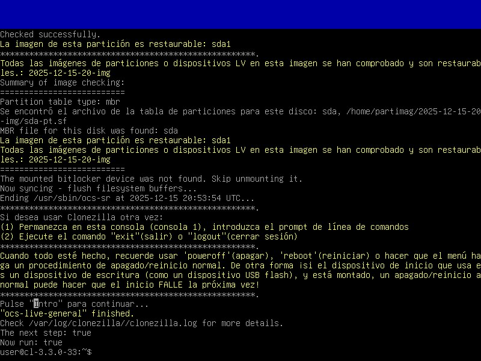
Conclusión
La práctica demuestra que Clonezilla permite generar una imagen restaurable de forma fiable, verificando tanto el proceso de copia como la integridad del resultado final.
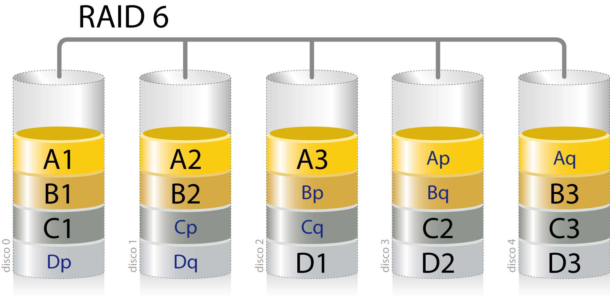
En esta práctica se documenta la creación y administración de un RAID 6 por software en Ubuntu Server usando mdadm. El proceso incluye la preparación de discos, particionado, creación del arreglo, formateo, montaje, configuración persistente y simulación de fallo con disco de reserva.
Resumen de la práctica
Se parte de una máquina virtual configurada con varios discos adicionales destinados al RAID. A partir de ahí se preparan las particiones, se crea el arreglo /dev/md0, se monta en el sistema y finalmente se comprueba su tolerancia a fallos simulando la caída de uno de los discos activos.
| Característica | RAID 6 |
|---|---|
| Tolerancia a fallos | Hasta 2 discos |
| Rendimiento lectura | Bueno |
| Rendimiento escritura | Más penalizado que RAID 5 |
| Uso recomendado | Entornos donde prima la seguridad de datos |
Se muestra la configuración de almacenamiento de la máquina virtual en VirtualBox. Hay un controlador SATA con 7 puertos y varios discos virtuales añadidos. Se aprecia un disco principal llamado Ubuntu ISO Raid 6.vdi y varios discos Raid6_X.vdi, lo que indica que la máquina virtual ya está preparada con un disco de sistema, cinco discos destinados al RAID 6 y un disco adicional configurado como reserva.
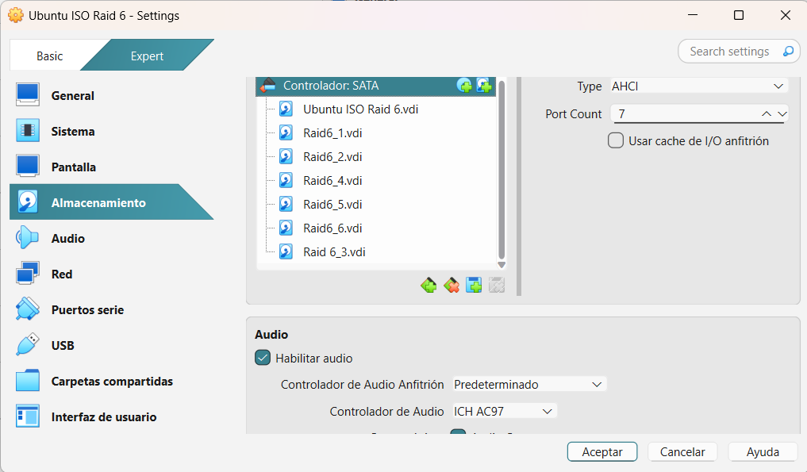
Se ejecuta lsblk para listar los dispositivos de bloques detectados por Ubuntu. El disco sda de 15G contiene el sistema, con particiones /boot/efi, /boot y el volumen lógico /. Además aparecen seis discos adicionales de 1G: sdb, sdc, sdd, sde, sdf y sdg. Cinco de ellos se utilizarán como discos activos del RAID 6, mientras que uno quedará configurado como disco de reserva. Todavía no tienen particiones ni puntos de montaje asignados.
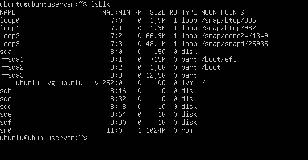
Se ve la consola de Ubuntu Server tras iniciar sesión con el usuario ubuntu. Aparece el resumen del sistema, incluyendo carga, uso de disco, memoria e IP asignada. Después se instala o verifica mdadm con sudo apt install mdadm, confirmando que la utilidad necesaria para gestionar RAID software ya está disponible.
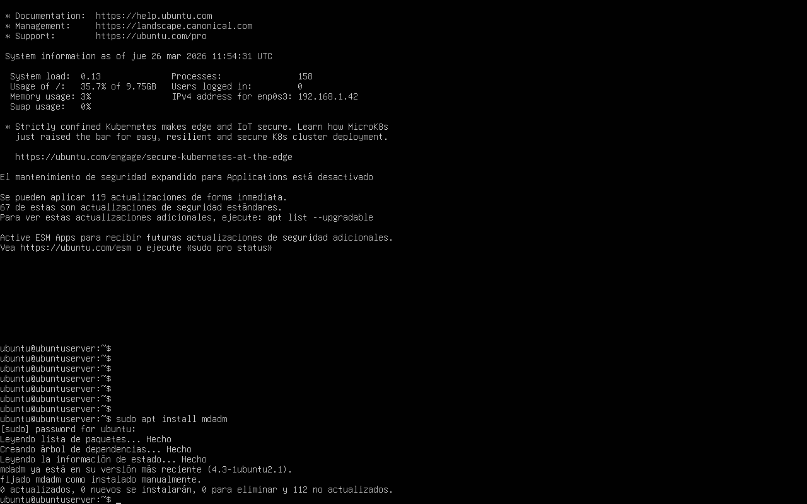
Se ejecuta fdisk sobre el disco /dev/sdb, que estaba vacío y sin tabla de particiones reconocida. El sistema crea una nueva etiqueta de disco DOS o MBR y a continuación muestra la ayuda interactiva de fdisk, iniciando así el proceso de particionado manual del primer disco destinado al RAID.
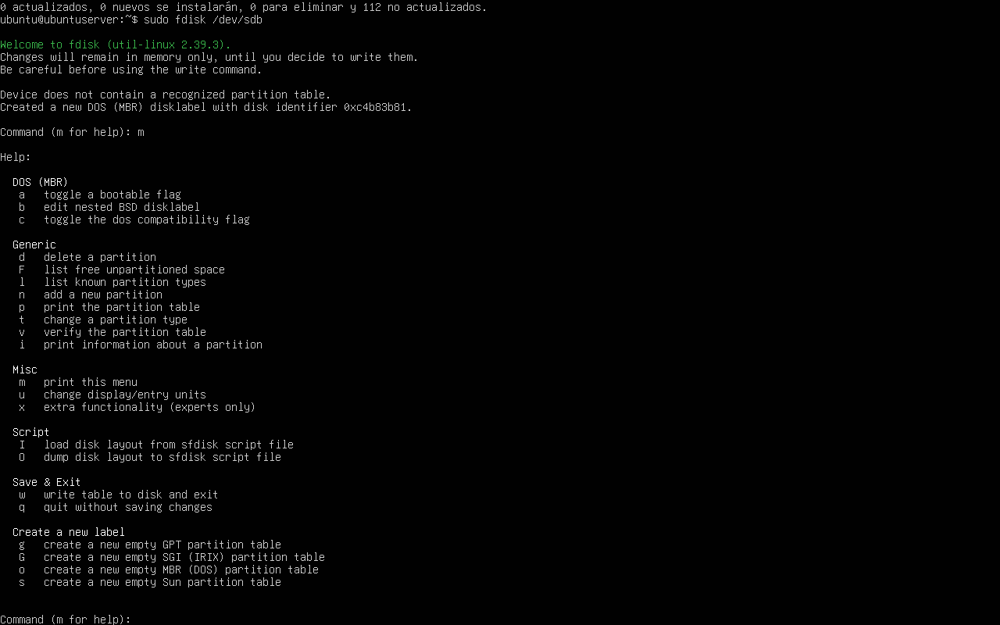
Dentro de fdisk se usa la opción n para crear una nueva partición. Se elige una partición primaria, número 1, ocupando todo el disco. El resultado es una partición Linux de aproximadamente 1023 MiB, lista para continuar con su preparación como miembro del arreglo RAID.
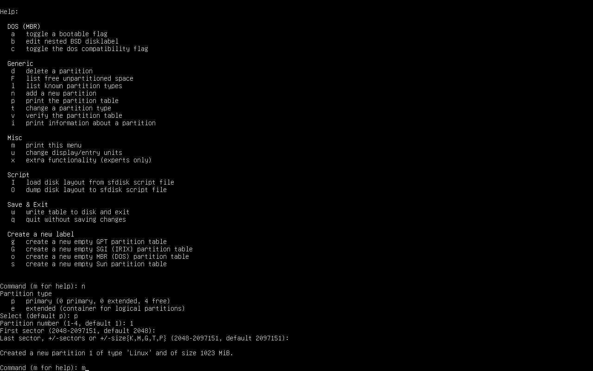
En fdisk se consulta la lista de tipos de partición y después se modifica el tipo de /dev/sdb1 mediante la opción t, asignándole el código fd, que corresponde a Linux raid autodetect. Con ello, la partición queda marcada específicamente para su uso en un RAID por software.
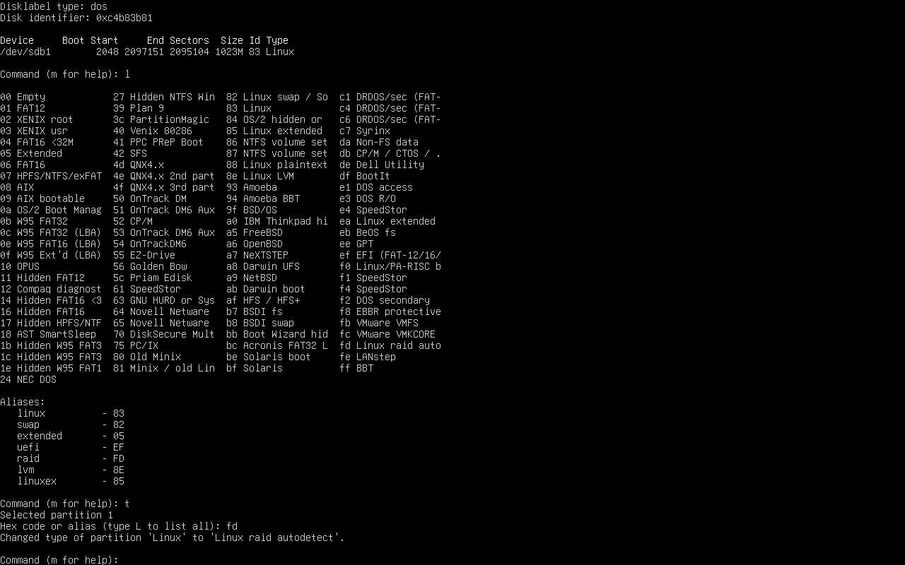
Se guardan los cambios en /dev/sdb con w, se accede al usuario root con sudo su y luego se clona la misma tabla de particiones a otro disco con sfdisk -d /dev/sdb | sfdisk /dev/sdc. El resultado muestra que en /dev/sdc se crea correctamente una partición /dev/sdc1 del mismo tamaño y tipo.
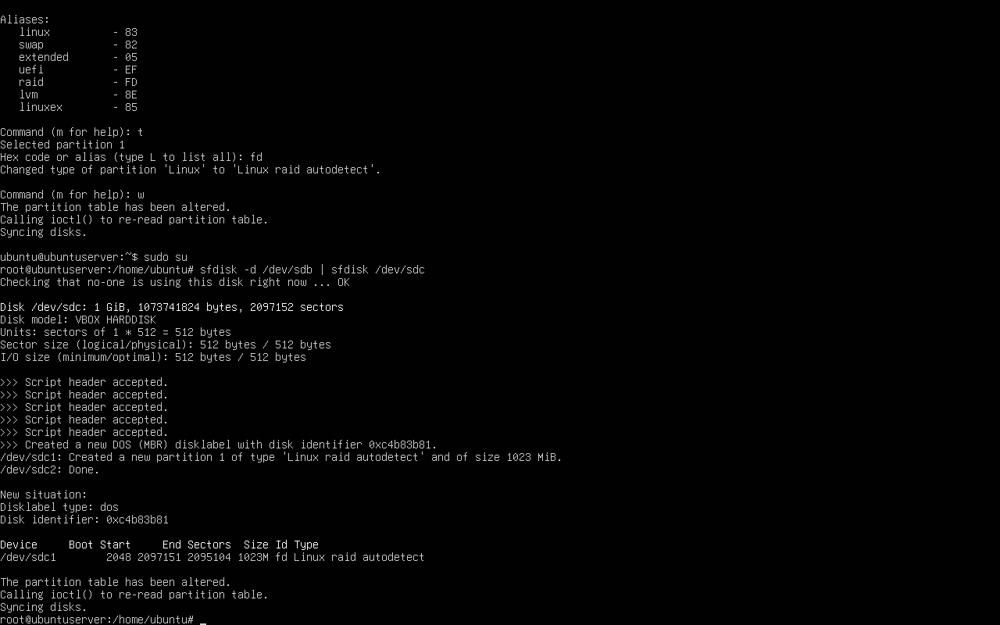
Se observa que el mismo procedimiento se ha aplicado al resto de discos y, tras salir del usuario root con exit, el comando lsblk confirma que ya existen las particiones /dev/sdb1, /dev/sdc1, /dev/sdd1, /dev/sde1, /dev/sdf1 y /dev/sdg1. Todas ellas aparecen con un tamaño aproximado de 1023 MiB.
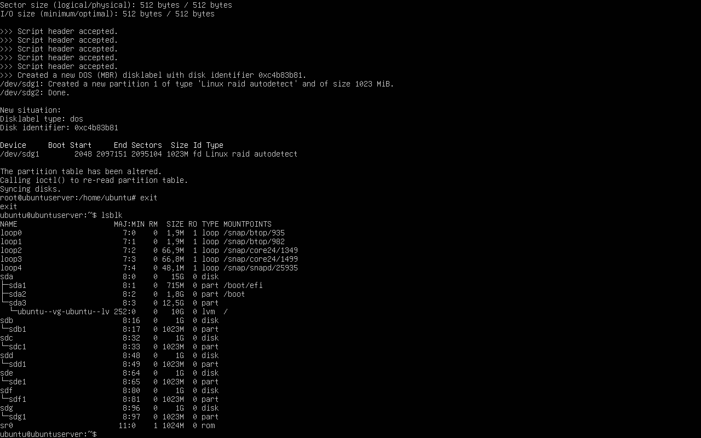
Se actualiza el índice de paquetes con sudo apt-get update y después se instala o verifica la instalación de mdadm con sudo apt-get install mdadm. La salida confirma que la herramienta ya estaba en su versión más reciente.
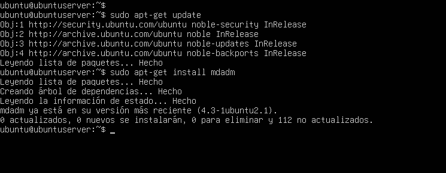
Se crea el arreglo con sudo mdadm --create --verbose /dev/md0 --level=6 --raid-devices=5 /dev/sdb1 /dev/sdc1 /dev/sdd1 /dev/sde1 /dev/sdf1. Después se consulta su estado con sudo cat /proc/mdstat, confirmando que md0 está activo como raid6, con los cinco dispositivos detectados y operativos, mostrando el estado [UUUUU].
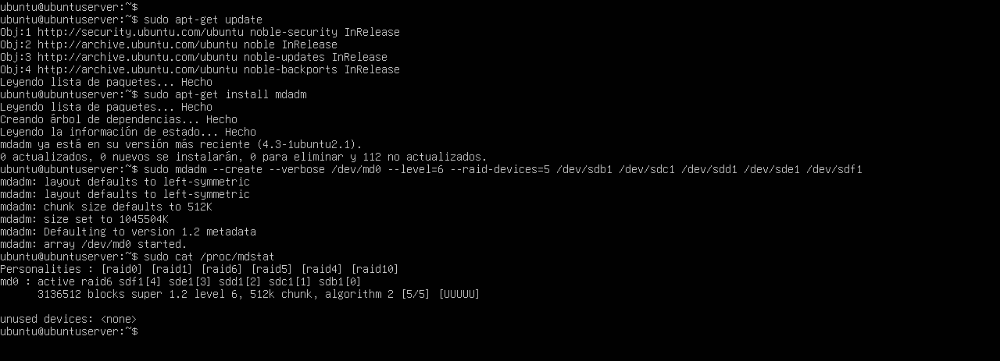
Tras revisar el estado general con cat /proc/mdstat, se ejecuta sudo mdadm --detail /dev/md0 para obtener información completa del arreglo. La salida confirma que /dev/md0 es un RAID 6 con cinco dispositivos activos, estado clean, metadatos versión 1.2, tamaño aproximado de 3 GiB y todas las particiones sincronizadas correctamente.
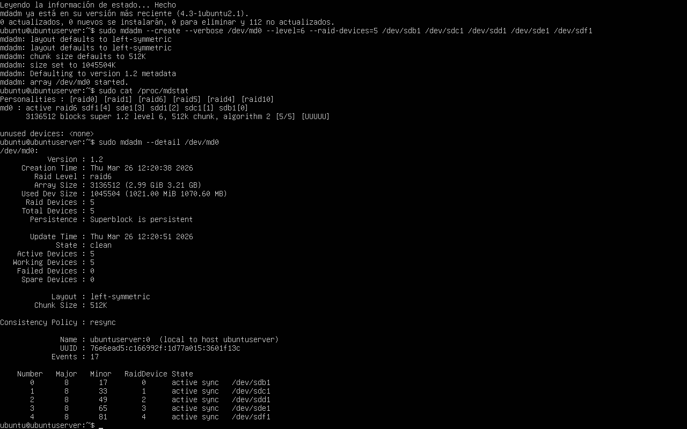
Una vez validado el arreglo, se crea el sistema de archivos con sudo mkfs.ext4 /dev/md0. La herramienta informa de la creación correcta del sistema de archivos ext4, incluyendo UUID, bloques, inodos y journal, dejando el volumen preparado para su uso.
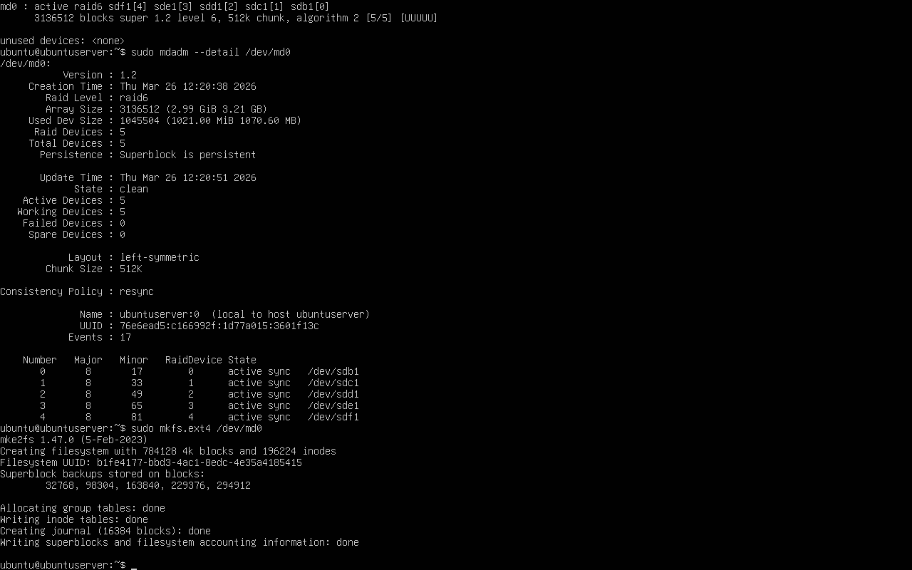
Se crea el punto de montaje con sudo mkdir /mnt/Raid6 y después se monta el volumen con sudo mount /dev/md0 /mnt/Raid6. La comprobación con lsblk muestra que /dev/md0 aparece como dispositivo raid6 de 3G montado en /mnt/Raid6.
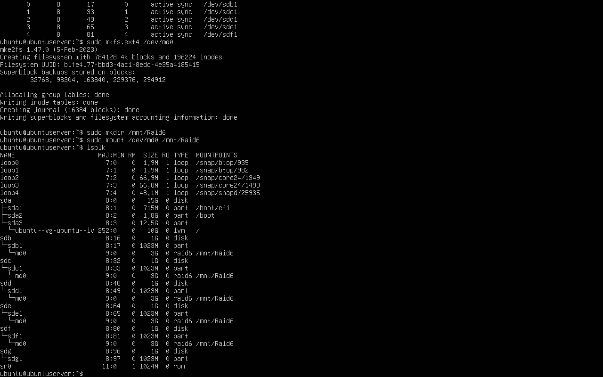
Dentro del volumen montado se crea y edita un archivo de prueba llamado joaquin.txt usando el editor nano. En la ventana se observa el texto guardado, lo que sirve para comprobar que el sistema de archivos del RAID permite almacenar datos con normalidad.
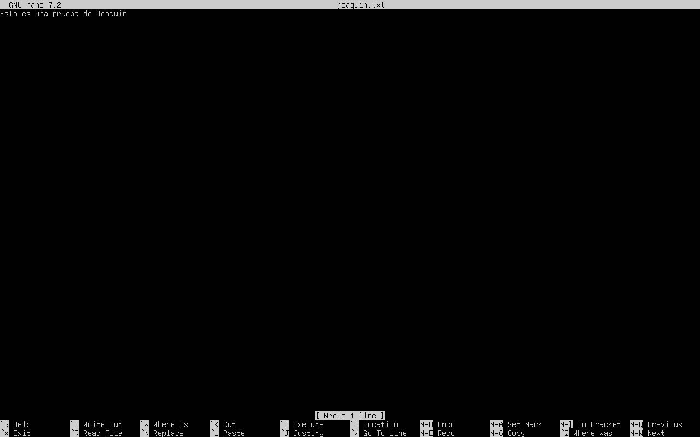
Se comprueba el contenido del archivo con cat joaquin.txt y después se revisa la configuración de mdadm con cat /etc/mdadm/mdadm.conf. A continuación se añade la definición del arreglo al archivo de configuración, se actualiza el arranque con sudo update-initramfs -u y finalmente se agrega una entrada persistente en /etc/fstab para que el RAID se monte automáticamente tras reiniciar.
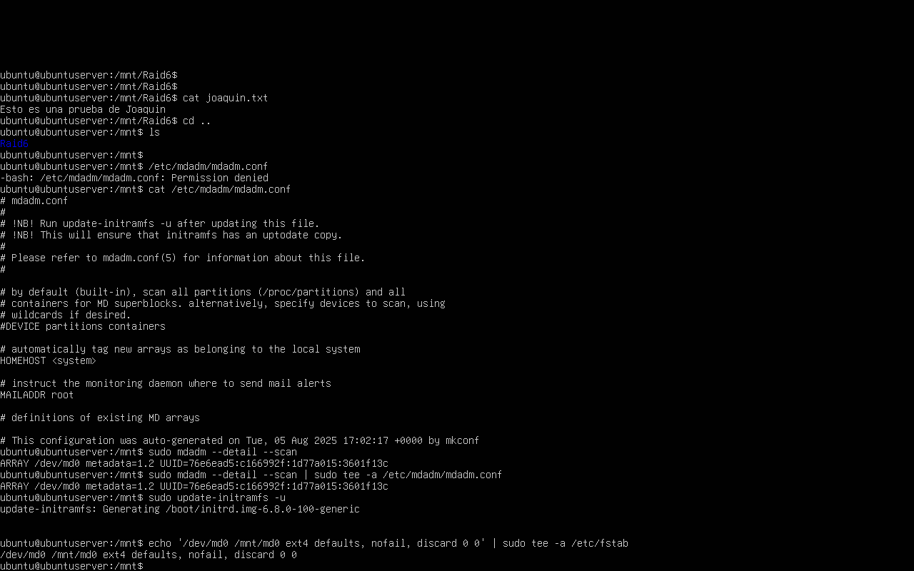
En esta captura se comprueba el estado del arreglo con sudo mdadm --detail /dev/md0 y se observa que el RAID 6 sigue formado por cinco discos activos y un disco de reserva. La salida muestra Working Devices: 6, Spare Devices: 1 y especifica que /dev/sdg1 está asignado como spare.
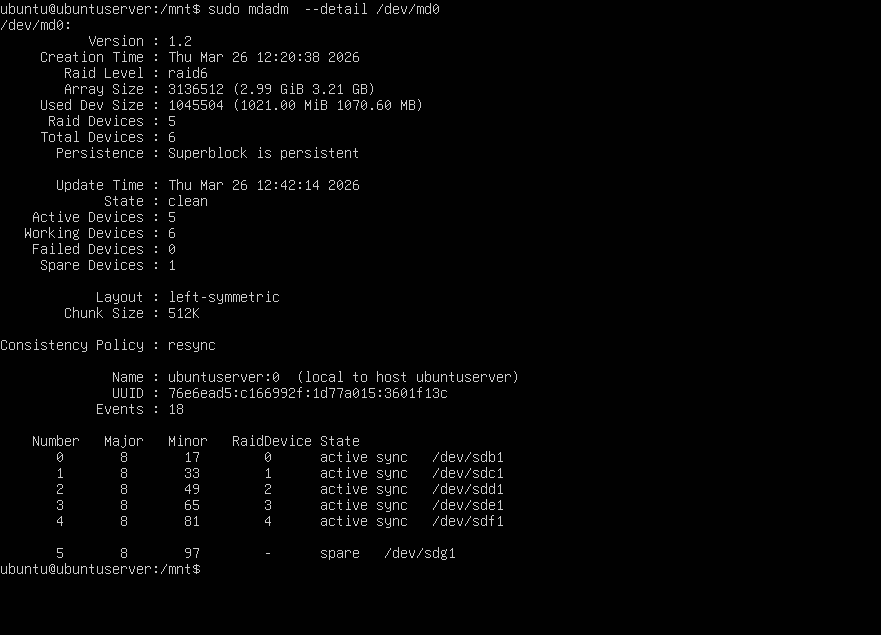
Aquí se simula una avería manual del disco /dev/sdd1 mediante sudo mdadm --manage --fail /dev/md0 /dev/sdd1, provocando que el sistema lo marque como defectuoso. Al volver a consultar el estado del arreglo, se aprecia que /dev/sdd1 pasa a estado faulty y que el disco de reserva /dev/sdg1 entra automáticamente en servicio como disco activo sincronizado.
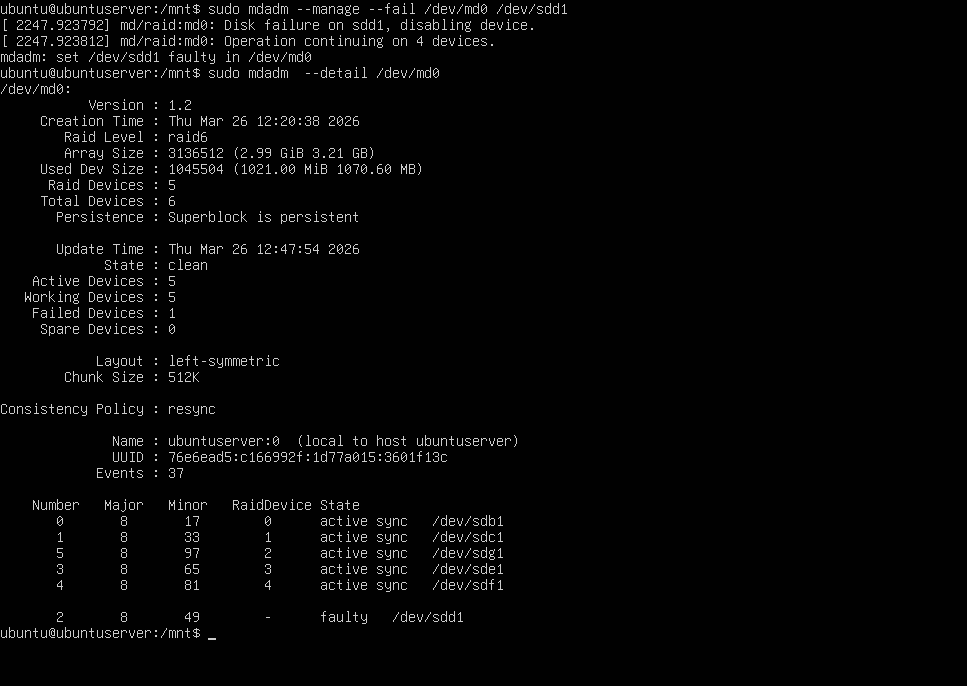
Después del fallo simulado, se intenta retirar el disco averiado con sudo mdadm --manage /dev/md0 --remove /dev/sdd1. El sistema responde que no puede eliminarlo en ese momento. Aun así, una nueva comprobación con sudo mdadm --detail /dev/md0 confirma que el RAID continúa operativo y estabilizado tras la sustitución lógica realizada con el disco de repuesto.
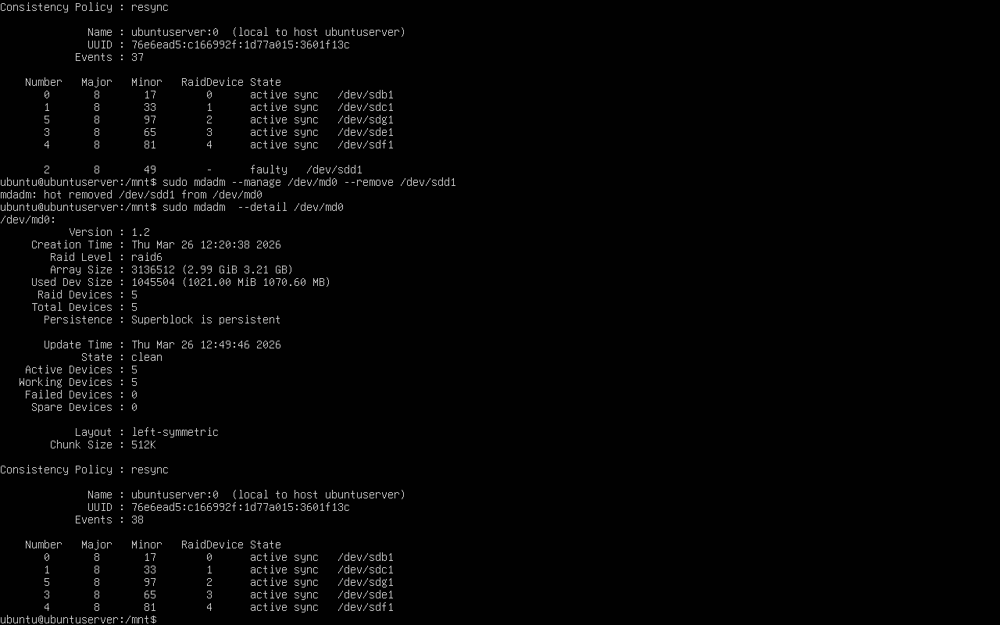
En esta última captura se vuelve a añadir el disco /dev/sdd1 al arreglo usando sudo mdadm --manage /dev/md0 --add /dev/sdd1. La salida confirma su incorporación y, al revisar otra vez el estado con sudo mdadm --detail /dev/md0, se ve que el RAID mantiene cinco discos activos y ahora /dev/sdd1 queda nuevamente como spare, restaurando así la configuración con un disco de reserva disponible.
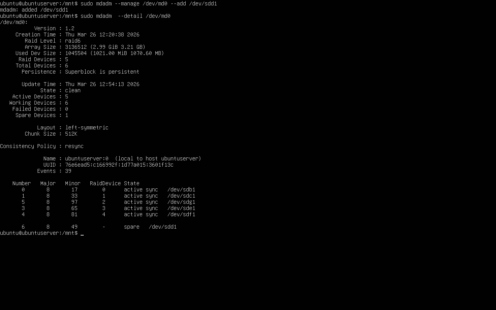
Conclusión
La práctica demuestra que un RAID 6 por software ofrece tolerancia a fallos y continuidad de servicio, especialmente cuando se combina con un disco de reserva preparado para entrar automáticamente en funcionamiento ante una incidencia.
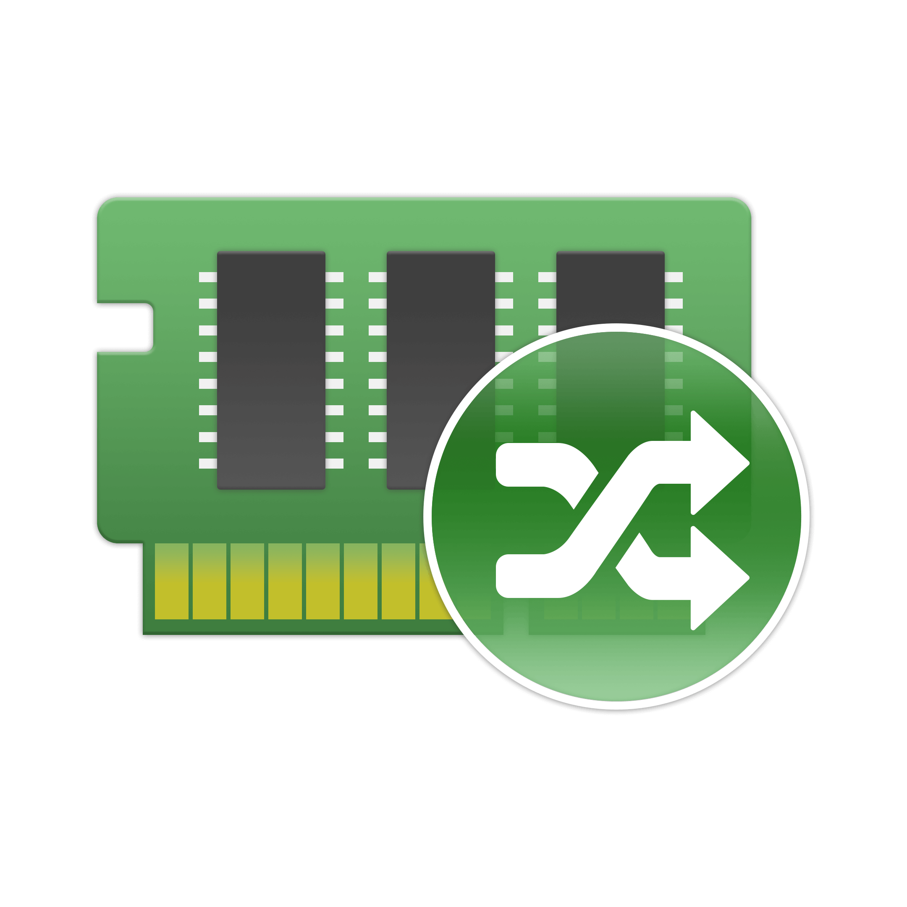
En un portátil Asus TUF Gaming F15, se ha realizado una liberación de memoria RAM utilizando el programa Wise Memory Optimizer. A continuación, se muestra el proceso antes y después de optimizar la memoria, junto con la configuración aplicada.
Objetivo de la práctica
Esta herramienta permite liberar memoria RAM ocupada por procesos en segundo plano y mejorar la disponibilidad de recursos del sistema. También puede configurarse para optimizar de forma automática según distintos criterios.
Se muestra el uso de memoria antes de optimizar. La RAM utilizada es de 10,42 GB (33%) y hay 21,33 GB disponibles (67%). El sistema está funcionando con una carga moderada de memoria. En este punto se pulsa el botón Optimizar para liberar recursos.
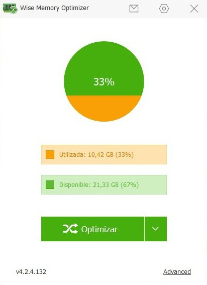
El programa confirma que se han liberado 3,06 GB de memoria. Aparece una notificación indicando la cantidad optimizada. Esto significa que varios procesos en segundo plano han sido limpiados, aumentando así la memoria disponible del sistema.
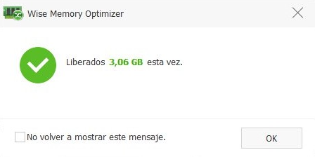
Tras la optimización, el uso de RAM baja al 23%, con 7,31 GB en uso. La memoria disponible aumenta a 24,44 GB (77%). Se observa una mejora clara en la disponibilidad del sistema, dejando el equipo con más recursos libres para otras tareas.
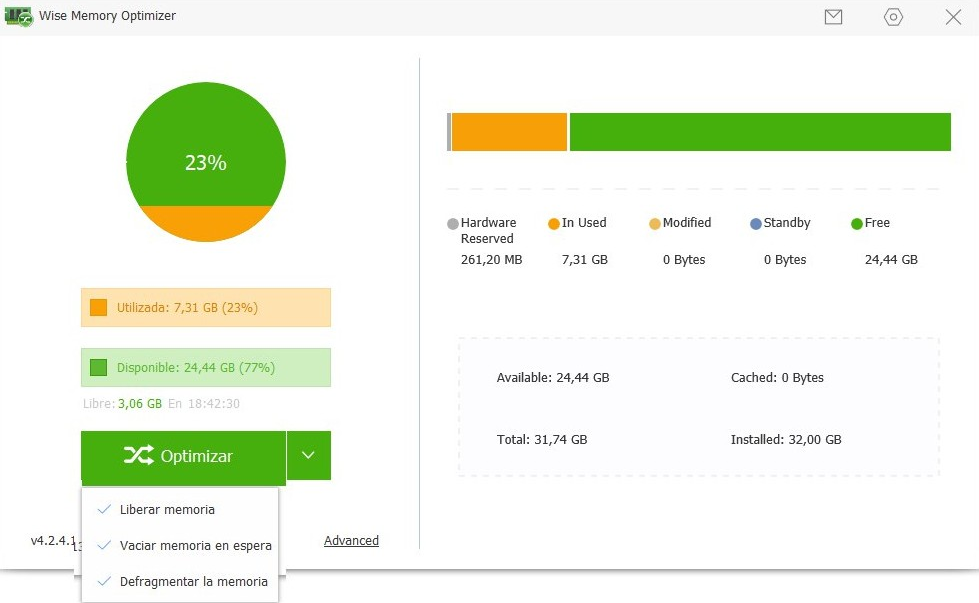
En esta captura se muestran las opciones de configuración activadas. Está habilitada la optimización automática cuando la memoria baja al 30%. Además, el programa solo se ejecuta cuando la CPU está libre. El idioma está configurado en español y se muestran notificaciones tras cada optimización.
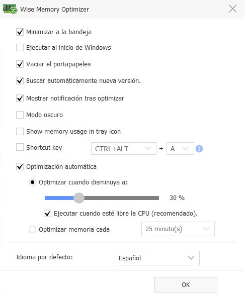
Conclusión
La prueba muestra que Wise Memory Optimizer puede liberar una cantidad apreciable de RAM y mejorar la disponibilidad del sistema de forma inmediata. También destaca por permitir automatizar este proceso según el estado de la memoria y la carga de la CPU.